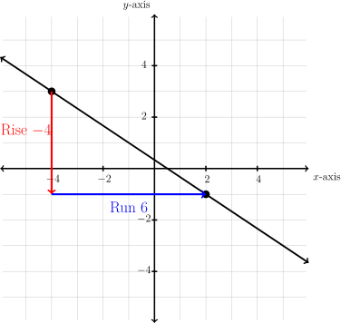
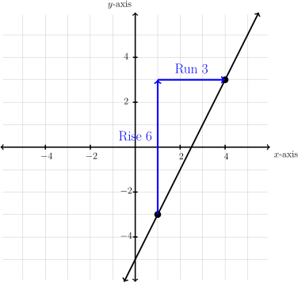
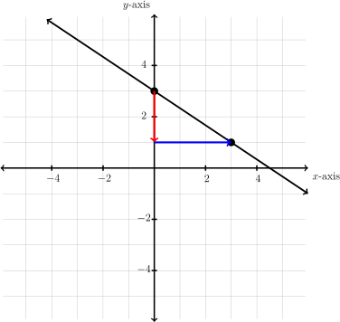
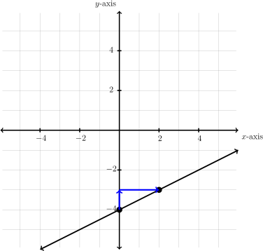
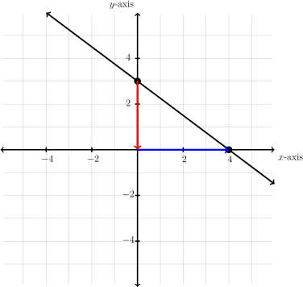
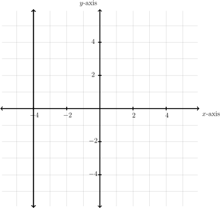

Subsection3.B.1Slope
One of the most important properties of a line is its slope. Slope is a measure of steepness. A line with a large slope, such as 25, is very steep. A line with a small slope, such as \(\frac{1}{10}\) is very flat. We will also use slope to describe the direction of the line. A line that rises from left to right has a positive slope, and a line that falls from left to right has a negative slope. A horizontal line has zero slope. To measure steepness we are interested in how fast the line rises compared to how far the line runs. For this reason we will describe slope as the fraction \(\dfrac{\text{rise}}{\text{run}}\text{.}\)
Rise is a vertical change, or a change in the \(y\)-values. Run wis a horizontal change, or a change in the \(x\)-values. So another way to describe slope would be the fraction \(\frac{\text{change in } y}{\text{change in } x}\text{.}\) We can draw vertical and horizontal lines from one point to another to make what is called a slope triangle. The sides of the slope triangle give us our slope.
Example3.B.1Determine Slope Given Graph

To determine the slope of this line we will consider the rise, or vertical change, and the run, or horizontal change. Drawing in these lines makes a slope triangle that we can use to count from one point to the next.
The graph goes down \(4\text{,}\) right \(6\text{.}\) This is rise \(-4\text{,}\) run \(6\text{.}\)
As a fraction it would be \(\frac{-4}{6}\text{.}\) Reduce the fraction to get \(\frac{-2}{3}\text{.}\) The slope is negative, indicating that this line falls.
Our Solution\(\checkmark\)
Example3.B.2Determine Slope Given Graph

For this line, the rise is up \(6\text{,}\) the run is right \(3\text{.}\)
Our slope is then written as a fraction, \(\frac{\text{rise}}{\text{run}}\) or \(\frac{6}{3}\text{.}\) This fraction reduces to \(2\text{.}\)
The slope is positive, indicating this line rises.
Our Solution\(\checkmark\)
There are two special lines illustrated in the following example.
Example3.B.3Special Slopes
In this graph there is no rise, but the run is \(3\) units. This slope becomes \(\frac{0}{3}=0\text{.}\) This line, and all horizontal lines have a zero slope.
This line has a rise of \(5\text{,}\) but no run. The slope becomes \(\frac{5}{0}=\) undefined. This line, and all vertical lines, have no slope. \(\checkmark\)
As you can see there is a big difference between having a zero slope and having no slope or undefined slope. Remember, slope is a measure of steepness. The first slope is not steep at all, in fact it is flat. Therefore it has a zero slope. The second slope can't get any steeper. It is so steep that there is no number large enough to express how steep it is. This is an undefined slope.
We can find the slope of a line through two points without seeing the points on a graph. We can do this using a slope formula. We can calculate the change in \(y\) values by subtracting the \(y\) coordinates of the points. Similarly, the change in the \(x\) values, we can calculate by subtracting the \(x\) coordinates of the points.
\begin{gather}
\text{The slope of a line through }
(x_1, y_1)\text{ and }
(x_2, y_2)\text{ is }
\dfrac{y_2-y_1}{x_2-x_1}\label{equation-slope}\tag{3.B.1}
\end{gather}
When mathematicians began working with slope, it was called the modular slope. For this reason we often represent the slope with the variable \(m\text{.}\) Now we have the following formula:
\begin{gather}
\text{Slope}
=m=\dfrac{\text{rise}}{\text{run}}=\dfrac{\text{change in } y}{\text{change in }x} =\dfrac{y_2-y_1}{x_2-x_1}\label{equation-m-slope}\tag{3.B.2}
\end{gather}
When calculating slope, it is important we subtract the \(y\) values and the \(x\) values in the same order.
Example3.B.4Determine Slope Given Two Points
Determine the slope and describe the line.
Determine the slope between \((-4, 3)\) and \((2,-9)\text{.}\) First identify \(x_1, y_1, x_2, y_2\text{.}\)
\begin{align*}
(x_1, y_1)\amp =(-4, 3)\text{ and}\\
(x_2,y_2)\amp =(2,-9) \amp\amp\text{Use slope formula
\(m=\dfrac{y_2-y_1}{x_2-x_1}\)}\\
m\amp =\dfrac{-9-3}{2-(-4)} \amp\amp \text{Simplify}\\
m\amp =\dfrac{-12}{6} \amp\amp \text{Reduce}\\
m\amp =-2\lt 0\text{, falls} \amp\amp \text{Our Solution}\checkmark
\end{align*}
Example3.B.5Determine Slope Given Two Points
Determine the slope and describe the line.
Determine the slope between \((4, 6)\) and \((2,-1)\text{.}\) First identify \(x_1, y_1, x_2, y_2\text{.}\)
\begin{align*}
(x_1, y_1)\amp =(4, 6)\text{ and}\\
(x_2,y_2)\amp =(2,-1) \amp\amp\text{Use slope formula
\(m=\dfrac{y_2-y_1}{x_2-x_1}\)}\\
m\amp =\dfrac{-1-6}{2-4}\amp\amp \text{Simplify}\\
m\amp =\dfrac{-7}{-2} \amp\amp \text{Reduce, multiplying}\\
\amp\amp\amp\text{both numerator and denominator by
\(-1\)}\\
m\amp =\dfrac{7}{2}\gt 0\text{, rises} \amp\amp \text{Our Solution}\checkmark
\end{align*}
Example3.B.6Determine Slope Given Two Points
Determine the slope and describe the line.
Determine the slope between \((-4,-1)\) and \((-4,-5)\text{.}\) First identify \(x_1, y_1, x_2, y_2\text{.}\)
\begin{align*}
(x_1, y_1)\amp =(-4,-1)\text{ and}\\
(x_2,y_2)\amp =(-4,-5) \amp\amp\text{Use slope formula
\(m=\dfrac{y_2-y_1}{x_2-x_1}\)}\\
m\amp =\dfrac{-5-(-1)}{-4-(-4)}\amp\amp \text{Simplify}\\
m\amp =\dfrac{-4}{0} \amp\amp \text{Can't divide by zero, undefined}\\
m\amp =\text{does not exist (no slope),} \amp\amp \text{Our Solution}\checkmark\\
\text{vertical}\amp\amp\amp
\end{align*}
Example3.B.7Determine Slope Given Two Points
Determine the slope and describe the line.
Determine the slope between \((3,1)\) and \((-2,1)\text{.}\) First identify \(x_1, y_1, x_2, y_2\text{.}\)
\begin{align*}
(x_1, y_1)\amp =(3,1)\text{ and}\\
(x_2,y_2)\amp =(-2,1) \amp\amp\text{Use slope formula
\(m=\dfrac{y_2-y_1}{x_2-x_1}\)}\\
m\amp =\dfrac{1-1}{-2-3}\amp\amp \text{Simplify}\\
m\amp =\dfrac{0}{-5} \amp\amp \text{Reduce}\\
m\amp =0\text{, horizontal} \amp\amp \text{Our Solution}\checkmark
\end{align*}
Note: There is a big difference between a zero slope and no slope.
-
Zero is an integer and it has a value: slope \(=0\) indicates a flat horizontal line.
-
No slope has no value, it is undefined: slope undefined indicates a vertical line.
Slope of Vertical Lines in WeBWorK
Type undefined for the slope of a vertical line.
Subsection3.B.2Slope-Intercept Form
We have used a table of values to graph a line. However, if we can identify some properties of the line, we can make a graph much more quickly. One such method uses the
- slope (represented by \(m\)) and the
- \(y\)-intercept (represented by \(b\))
of the equation. Recall that the \(y\)-intercept is the point where the line crosses the vertical axis and that \(x = 0\) at this point. Thus the \(y\)-intercept is the point \((0, b)\) where the graph crosses the vertical \(y\)-axis. Recall that any other point on the line can be represented by \((x, y)\text{.}\) Using this information we will look at the slope formula and solve the formula for \(y\text{.}\)
Example3.B.8Determine Slope-Intercept Form
\begin{align*}
\text{
\(m, (0,b), (x,y)\)} \amp\amp\amp \text{Using the slope formula
\(\dfrac{y_2-y_1}{x_2-x_1}=m\) gives:}\\
\dfrac{y-b}{x-0}\amp =m \amp\amp \text{Simplify: \(x-0=x\)}\\
\dfrac{y-b}{x}\amp =m \amp\amp \text{Multiply both sides by
\(x\)}\\
y-b\amp =mx \amp\amp \text{Add
\(b\) to both sides}\\
\underline{+b}\amp\underline{\phantom{12345}+b} \amp\amp\amp \text{ }\\
y\amp =mx+b \amp\amp \text{Our Solution}\checkmark
\end{align*}
This equation, \(y =mx + b\) can be thought of as the equation of any line that has a slope of \(m\) and a \(y\)-intercept of \(b\text{.}\) This formula is known as the slope-intercept equation.
\begin{gather}
\text{Slope-Intercept Equation: }
y=mx+b\label{equation-slope-intercept}\tag{3.B.3}
\end{gather}
If we know the slope and the \(y\)-intercept we can easily determine the equation that represents the line.
Example3.B.9Determine Equation Given Slope and Intercept
\begin{align*}
\text{Slope
\(=\dfrac{3}{4}\),
\(y\)-intercept
\(=-3\)} \amp\amp\amp \text{Use the slope-intercept equation}\\
\text{
\(y =mx+b\)} \amp\amp\amp \text{
\(m\) is the slope,
\(b\) is the
\(y\)-intercept}\\
\text{
\(y=\dfrac{3}{4}x-3\)} \amp\amp\amp \text{Our Solution}\checkmark
\end{align*}
We can also determine the equation by looking at a graph and finding the slope and \(y\)-intercept.
Example3.B.10Determine Equation Given Graph

Identify the point where the graph crosses the \(y\)-axis \((0,3)\text{.}\) This means the \(y\)-intercept is \(3\text{.}\)
Identify one other point and draw a slope triangle to find the slope. The slope is \(-\frac{2}{3}\text{.}\)
Our Solution\(\checkmark\)
We can also use an equation to identify the slope and \(y\)-intercept and then graph the equation using this information. To put the equation in slope-intercept form, we solve it for \(y\text{.}\)
Example3.B.11Determine Slope and Intercept
Determine the slope and intercept of \(2x-4y =6\text{.}\)
Write in slope-intercept form:
\begin{align*}
2x-4y\amp =6 \amp\amp \text{Solve for
\(y\)}\\
\underline{-2x\phantom{1234}}\amp\underline{\phantom{123}-2x} \amp\amp \text{Subtract
\(2x\) from both sides}\\
-4y\amp =-2x+6 \amp\amp \text{Put
\(x\) term first on RHS}\\
\overline{-4}\amp\phantom{1234}\overline{-4}\phantom{1}\overline{-4} \amp\amp \text{Divide each term by
\(-4\)}\\
\text{Slope-intercept form: }
y\amp =\dfrac{1}{2}x-\dfrac{3}{2}\amp\amp \text{Slope-intercept equation
\(y=mx+b\)}\\
\text{Slope: }
m=\dfrac{1}{2}\amp\text{, Intercept: }
b=\dfrac{3}{2} \amp\amp \text{Our Solution}\checkmark
\end{align*}
Once we have an equation in slope-intercept form we can graph it by
- plotting the \(y\)-intercept, then
- using the slope ( rise/run), plotting a second point, then
- connecting the dots
Example3.B.12Graph Line Given Slope-Intercept Equation
\begin{align*}
\text{ Graph
\(y =\dfrac{1}{2}x-4\)} \amp\amp\amp \text{Recall the slope-intercept equation }\\
y =mx+b \amp\amp\amp \text{Identify the slope,
\(m\), and the
\(y\)-intercept,
\(b\)}\\
\text{
\(m=\dfrac{1}{2}, b=-4\)} \amp\amp\amp \text{Make the graph}
\end{align*}

Start with a point \((0, -4)\) at the \(y\)-intercept of \(-4\text{.}\)
Then use the slope \(\frac{\text{rise}}{\text{run}}\text{:}\) rise up \(1\) unit and run \(2\) units right to plot the next point \((2,-3)\text{.}\)
Once we have both points plotted, connect the dots to get our graph. \(\checkmark\)
Example3.B.13Graph Line
Graph.
\begin{align*}
3x+4y\amp =12 \amp\amp \text{Not in slope intercept form}\\
\underline{-3x\phantom{1234}}\amp\underline{\phantom{12345}-3x} \amp\amp \text{Subtract
\(3x\) from both sides}\\
4y\amp =-3x+12 \amp\amp \text{Put
\(x\) term first}\\
\overline{4}\amp\hphantom{1234}\overline{4}\hphantom{12345}\overline{4}\amp\amp \text{Divide each term by
\(4\)}\\
y\amp =-\dfrac{3}{4}x+3 \amp\amp \text{Recall the slope-intercept equation }\\
y\amp =mx+b \amp\amp \text{Identify the slope,
\(m\), and the
\(y\)-intercept,
\(b\)}\\
m=-\dfrac{3}{4}\amp\text{, } b=3\amp\amp \text{Make the graph}
\end{align*}

Start with a point at the \(y\)-intercept of \(3\text{.}\)
Then use the slope \(\frac{\text{rise}}{\text{run}}\text{.}\) It's negative so it will go downhill: go down \(3\) units and run \(4\) units right to plot the next point.
Once we have both points, connect the dots to get our graph. \(\checkmark\)
Be very careful not to confuse using slope to find the next point with using coordinates such as \((4, -2)\) to find an individual point. Using coordinates we start from the origin \((0,0)\) and move horizontally first, and vertically second. Using slope, we start from any point on the line. The numerator of the slope is the vertical change and the denominator is the horizontal change.
Lines with zero slope or no slope can make a problem seem very different. A horizontal line has slope of zero, which when multiplied by \(x\) gives zero in the equation. So the equation simply becomes \(y = b\) (the \(y\)-intercept of the graph). The equation of a vertical line can't be written in slope-intercept form at all because the slope is undefined. There is no \(y\) in these equations. We will simply make \(x\) equal to the \(x\)-intercept of the graph.
Example3.B.14Vertical Line Equation

Give the equation of the line in the graph.
Because we have a vertical line and no slope there is no slope-intercept equation we can use. Rather we make \(x\) equal to the \(x\)-intercept of \(-4\text{.}\)
Our Solution\(\checkmark\)
Example3.B.15Horizontal Line Equation
Give the equation of the line in the graph.
Because we have a horizontal line the slope is zero. Thus the equation has \(y\) equal to the \(y\)-intercept of \(2\text{.}\)
Our Solution\(\checkmark\)